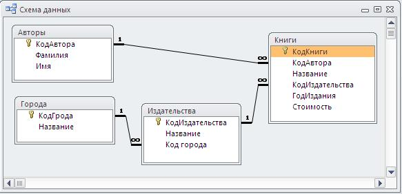
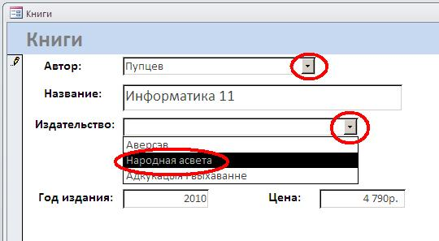

Создание и заполнение формы
-
В разделе На проверку/СУБД создайте базу 11Ф_NN_DB_3_2.accdb.
- База должна содержать 4 таблицы. Схема связи должна быть такой:

- Создайте формы для каждой из четырёх таблиц базы данных. Пример формы к таблице Книги (обратите внимание на наличие двух полей с выпадающими списками):
 Краткая справка по созданию в форме поля со списком
Подробная справка по созданию в форме поля со списком
Cведения впишите на своё усмотрение:
- количество городов - не менее 2;
- количество издательств - не менее 3;
- количество авторов - не менее 4;
- количество книг - каждый автор издал не менее двух книг.
|